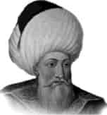

ORHAN GAZİ
Annesi : Mâl Hatun
Doğumu : 1281
Vefatı : 1360
Saltanatı : 1326 - 1359 (33 yıl)
Osmanlı Devleti’ni Osman Gazi kurmuştu. Fakat onu teşkilâtlandıran ve büyük bir devlet haline getiren Orhan Gazi idi. Orhan Gazi sarı sakallı, uzunca boylu, mavi gözlü idi. Yumuşak huylu ve merhametli, fakat yerine göre hiddetli ve şecaatliydi. Fakirleri sever ve ulemaya hürmet ederdi.
Son derece dindar, adaletli ve tebaasına kendisini sevdirmesini çok iyi bilirdi. Bizzat halk içine girer, onlarla yemek yer ve dertleşirdi. Hareketlerinde çok hesaplı davranır ve hiç telâş etmezdi. İznik’i fethettiği zaman Hıristiyanlara göstermiş olduğu insanca muamele, dillere destan olmuştu. Orhan Gazi’nin her yönden büyük bir insan olduğunu sadece Türkler değil, birçok yabancı tarihçiler dahi tasdik etmişlerdir. Orhan Gazi daha on beş yaşında iken savaşlara katılmış ve hayatının büyük bir kısmı savaş meydanlarında geçmiştir. Babasından aldığı 6.000 km2 olarak teslim aldığı toprakları altı misline çıkararak 95.000 km2 yapmıştır. Orhan Gazi bir devlet reisi sıfatı ile savaşlarda bizzat ordularının başında daima bulunmuştur. Devletin muntazam bir idare sistemine bağlanması lüzumunu görmüş ve teşkilât işini ise, Alâeddin Paşa ile Şeyh Edebali’nin bacanağı Çandarlı Kara Halil Paşa’ya havale etmişti. Orhan Gazi zamanında teşkilâtı üç noktada toplayabiliriz: Para, kıyafet, ordu. Orhan Bey’in büyük oğlu Süleyman Paşa, kendisinden önce vefat etmiştir. Kendi sağlığında iken başkumandanlık vazifesini II. oğlu Murat Hüdavendigâr’a devretmiştir.
Osmanlılar tarafından yaptırılan ilk cami Orhan Gazi tarafından 1334 yılında İznik’te yapılan Hacı Özbek Camii’dir. Bursa Medresesi’ni Orhan Bey yaptırmış ve ilk “Sultan” lâkabı da O’nun zamanında kullanılmıştır. Yine ilk Osmanlı parası da Orhan Bey zamanında basılmıştır. Müslüman Türkler Avrupa’ya ilk defa Orhan Bey zamanında geçmişlerdir. İstanbul’un Anadolu yakası tamamen Orhan Bey zamanında Osmanlı topraklarına katılmıştır. Yeni fethedilen Hıristiyan topraklarında yaşayan yerli Hıristiyan halktan Osmanlı hayranlığı, yeni fetihleri de kolaylaştırmıştır.
Zamanında fethedilen yerler: 1326’da Bursa, 1329’da İznik, 1337’de Gemlik’i fethetti ve Bizanslılara karşı Palekanon (Maltepe) Zaferi’ni kazandı. 1345’de Karesi Beyliği ilhak edildi. 1354’de Ankara ve Gelibolu fethedildi.
Orhan Gazi 1360 yılında yetmiş dokuz yaşında vefat etmiştir. Türbesi ise Bursa’da Osman Gazi’nin türbesi yanındadır. Türbe dört köşelidir. İçinde dört tane büyük mermer sütun vardır. Türbe bu dört sütun üzerine oturtulmuştur. Kubbesi geniş ve kurşunla örtülmüştür. Duvarları sade ve beyaza boyanmıştır. Tavanında onar kandilli birer tane avize asılıdır. Orta yerde Orhan Gazi’nin sandukası bulunmaktadır. Etrafı; pirinç parmaklıklar ile çevrilmiştir. Sandukanın kuzey yönünde Cem Sultan’ın oğlu Abdullah, kapı tarafında II. Beyazıt’ın oğlu Korkut, onun yanında Orhan Gazi’nin ailesi Nilüfer Hatun ve oğlu Kasım Çelebi ile Yıldı-rım’ın oğlu Musa Çelebi vardır. Bu türbede yirmi iki tane mezar bulunmaktadır. Türbeyi ise Sultan Abdülaziz yaptırmıştır.
Erkek çocukları: Süleyman Paşa, I. Murat, İbrahim, Halil, Kasım.
Kızı çocukları: Fatma Hatun